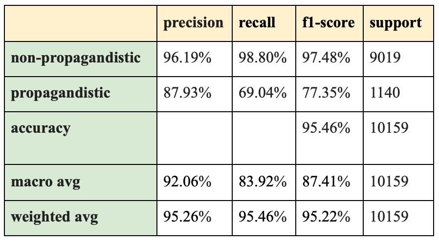
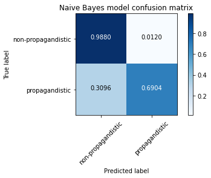
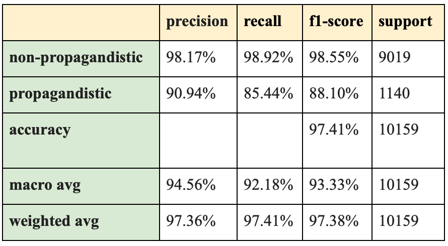
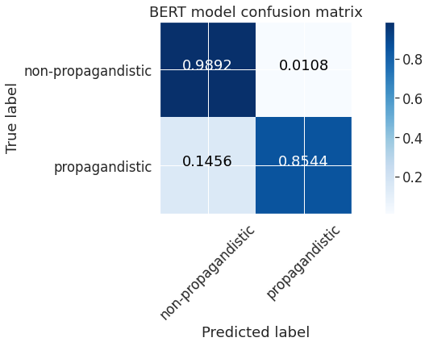

|
Propaganda Dectection Using BERT
Group members: Pemi Nguyen, Joy He, Fengyuan Liu, and Lily Zhao
|
|
Abstract
Propaganda contains all types of false, inaccurate or misleading information about individuals,
historical events, social issues, etc. and pose a big threat to our society. In today's world,
there’s a lot of widespread propaganda on different social media and online platforms, and it’s not easy to distinguish propagandistic content from non-propagandistic content from the untrained human eyes. In this project, we fine-tuned a BERT pretrained model and trained on a large corpus of non-propagandistic and propagandistic news and compared it with a baseline Naive Bayes classifier in order to see how well it is able to classify news as propagandistic or non-propagandistic. Our results found that while both models achieved roughly similarly high overall accuracy and high true negative rate (correctly identifying a non-propagandistic news as one), the BERT fine-tuned model has a 16.4% larger true positive rate (correctly identifying a propagandistic news as one). This promising result shows that BERT has the potential to detect propaganda well and lays a foundation for future work in building propaganda or fake news classifiers.
|
|
Problem statement
Misinformation and propaganda have become a major concern in society nowadays. The sheer volume of information coming from various sources, especially with the rise of social media where people have more platforms to share information, has directly contributed to an influx of misinformation. Propaganda is biased information that propagates a particular ideology or political
orientation, which might
have negative impacts on individuals and society (e.g., the US Presidential campaign in 2016
was influenced
by propaganda and fake news). Propagandistic content is often spread widely social media platforms like Facebook or Twitter and share a lot of similar linguistic characteristics such as excessive use of hyperbolic or unsubstantiated claims. It is difficult to spot propaganda with untrained human eyes
because propaganda
is not necessarily misinformtion. The development of machine learning has also led to the emergence of "neural fake news", a kind of misinformation generated by machines but greatly mimics human style, thus is more difficult to discern. To combat propaganda, we can harness the power of state-of-the-art NLP deep learning models such as BERT in order to recognize whether an article contains propagandistic content or not. Our goal is to build a propaganda classifier that aims to
detect whether
an online article from a website is "propagandistic" (positive class) or
"non-propagandistic" (negative class).
The labeling was done indirectly using distant
supervision, where an article is considered propagandistic if it comes from a news
outlet that is labeled
as propagandistic by human annotators.
|
|
Related work
Previous work on propaganda detection has focused on using word n-gram representation as
features for machine learning models. Rashkin
et al. formulated a text classification task (propaganda vs. trusted) using n-grams with
a logistic regression model, which led to poor performance on articles outside the sources
that the system was trained on. Barron et
al. experimented with various features, from writing style and readability level to the
presence of certain keywords, and also used logistic regression models as well as SVMs.
Other studies have looked into detecting common propaganda techniques such as name calling
(i.e., attacking an object/subject of the propaganda with an insulting label), repetition
(i.e., repeating the same message over and over), and slogans (i.e., using a brief and
memorable phrase). Da San Martino et
al. proposed a multi-granularity deep neural network that predicts where a propaganda
technique is used in a piece of text as well as the type of technique. Their best-performing
models for this task used BERT-based
contextual representations. Agarwal
et al. built on their work by developing an ensembled model combining linguistic
features-based machine learning classifiers with these transformer models.
BERT (Bidirectional Encoder Representations
from Transformers), released in late 2018, is a method of pretraining language
representations that was used to create models that NLP practicioners can then download and
use for free. These models can then be used to extract high quality language features from
raw text data or can be fine-tuned on a specific task (classification, entity recognition,
question answering, etc.) with a different dataset to produce state-of-the-art predictions.
|
|
Dataset
For our dataset, we used Propaganda Analysis Project. This corpus contains 52k articles from 100+ news outlets. Each article is
labeled as either “propagandistic” or “non-propagandistic”. The labeling was done indirectly
using distant supervision with
information from Media Bias/Fact Check (MBFC),
which is an independent organization evaluating media in terms of their bias and
propagandist content. The organization is composed of expert journalists or volunteers who
analyze entire news outlets. An article is considered propagandistic if it comes from a news
outlet that is labeled as propagandistic by these expert annotators.
There are three files in this dataset:
- proppy_1.0.train.tsv: 35986 articles in total, including 31965 real ones (88.82 %) and 4021 propagandistic ones (11.18 %). This file is used for training.
- proppy_1.0.dev.tsv: 5125 articles in total, including 4550 real ones (88.78 %) and 575 propagandistic ones (11.22 %). This file is used for validation.
- proppy_1.0.test.tsv: 10159 articles in total, including 9019 real ones (88.78 %) and 1140 propagandistic ones (11.22 %). This file is used for testing.
|
Methodology
- Fine-tuned BERT
Our approach used BERT to train a text classifier. Specifically, we took the pre-trained BERT model and added a few connected layers on top (with ReLU and Dropout) and trained the new model for our propaganda classification task. Fine-tuning BERT has three advantages over training a specific deep learning model (e.g., CNN and BiLSTM) that is well suited for specific NLP tasks:
- Quicker Development:
The pre-trained BERT model weights already encode a lot of information about our language, so it takes a lot less time to train the fine-tuned model. The authors recommend only 2-4 epochs for fine-tuning BERT, which saves a lot of time, compared to having to train models from scratch.
- Less Data: When we train models from scratch, we usually need extremely massive datasets in order to train our network to a decent accuracy. However, large datasets might not be always available. BERT allows us to use its pre-trained weights and fine-tune it to work on different NLP problems with much smaller data.
- Better Results: This simple fine-tuning procedure (typically adding one fully-connected layer on top of BERT and training for a few epochs) was shown to achieve state-of-the-art results with minimal task-specific adjustments for a wide variety of tasks: classification, language inference, semantic similarity, question answering, etc. The original BERT papers.
We will discuss specific implementation details in the following.
We first processed and cleaned our raw data. We removed entity mentions (e.g., @united) and some special characters. The level of processing here is much less than regular NLP models, because BERT was trained with the entire sentences.
To feed our text to BERT, it must be split into tokens, and then these tokens must be mapped to their index in the tokenizer vocabulary. We first split the sentence into tokens and added the special [CLS] and [SEP] tokens. We then mapped the tokens to their IDs. We padded or truncated all sentences to the same length. Finally, we created the attention masks which explicitly differentiate real tokens from [PAD] tokens.
The way BERT does sentence classification, is that it adds a token called [CLS] (for classification) at the beginning of every sentence. The output corresponding to that token can be thought of as an embedding for the entire sentence. We saved those embeddings to be used as the features to our baseline model - a Naive Bayes classifier with TF-IDF vectorization.
BERT consists of 12 transformer layers, each transformer layer takes in a list of token embeddings, and produces the same number of embeddings with the same hidden size (or dimensions) on the output. The output of the final transformer layer of the [CLS] token is used as the features of the sequence to feed a classifier. We extracted the last hidden layer of the [CLS] token and fed it to a single-hidden-layer feed-forward neural network as our classifier.
During training, we did the following at each pass:
- Unpack our data inputs and labels
- Load data onto the GPU for acceleration
- Clear out the gradients calculated in the previous pass
- Forward pass (feed input data through the network)
- Backward pass (backpropagation)
- Tell the network to update parameters with optimizer.step()
- Track variables for monitoring progress
- Compute loss on our validation data and track variables for monitoring progress
- Baseline: Naive Bayes with TF-IDF vectorization
In order to check how well the BERT model does compare to other NLP models, we chose a Naive Bayes classifier with TF-IDF vectorization as our baseline.
Naive Bayes classifiers are linear classifiers known for being easy to implement. Naive Bayes naively assumes that each word in a text occurs independently of its surrounding words. In practice, this independence assumption is usually violated, because words are not mutually independent. However, this model is able to achieve standard accuracies on a lot of NLP problems. In Rashkin et al’s research on fake news detection and political fact-checking using a Politico dataset, the Naive Bayes model yielded the highest tech accuracy for text classification on 2 classes together with a LSTM one (56 %).
|
|
Experiments/evaluation
We trained our models on the training set until the validation loss stops increasing. Then,
we ran all the models on the test set to get a final test accurracy, and then in the end, we
will run all the models with a test set to check the final test accuracy.
To evaluate our model, we built a baseline model, which is a Naive Bayes classifier.
|
Results
- Naive Bayes classifier
The table below shows the performance of the Naive Bayes classifier.

The figure below is the confusion matrix for the Naive Bayes classifier.

- Fine-tuned BERT
The table below shows the performance of the Fine-tuned BERT model.

The figure below shows the confusion matrix for the BERT model.

The test accuracies for both models are roughly close and very high (95.46% for the Naive Bayes model and 97.41% for the fine-tuned BERT model). However, purely looking at this doesn’t allow us to have a full picture of how well these two models perform. Due to the imbalance proportion of propagandistic articles in the original dataset (about 11% across 3 data files), both models might have learned the features of a non-propagandistic article well, and the classification result is skewed towards the non-propagandistic class. As a result, both models have very high true negative rates, which are close to 100%. This suggests that they both don’t have difficulty identifying articles free of propagandistic content. However, when looking at the true positive rate, we can see that the Naive Bayes model doesn’t do as well as the fine-tuned BERT one. BERT seems to be able to extract features of propagandistic content in an article and learn to differentiate it with unbiased, neutral content.
It’s worth noting that the true positive rates from both models are not as not as good their respective true negative rates, which seems to suggest that NLP models, even the classic ones, are able to correctly evaluate non-propagandistic content with very high probability, but propagandistic content still poses a challenge to them.
|
|
Video
Here's our demo for the BERT classifier. (Note: we used the word "fake" for "propagandistic" and "real" for "non-propagandistic" in the demos)
And here's one for our baseline model, a Naive Bayes classifier.
|
|